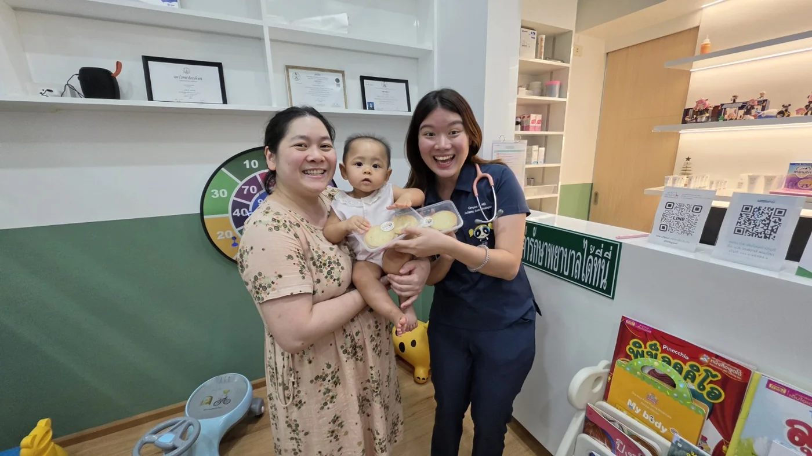
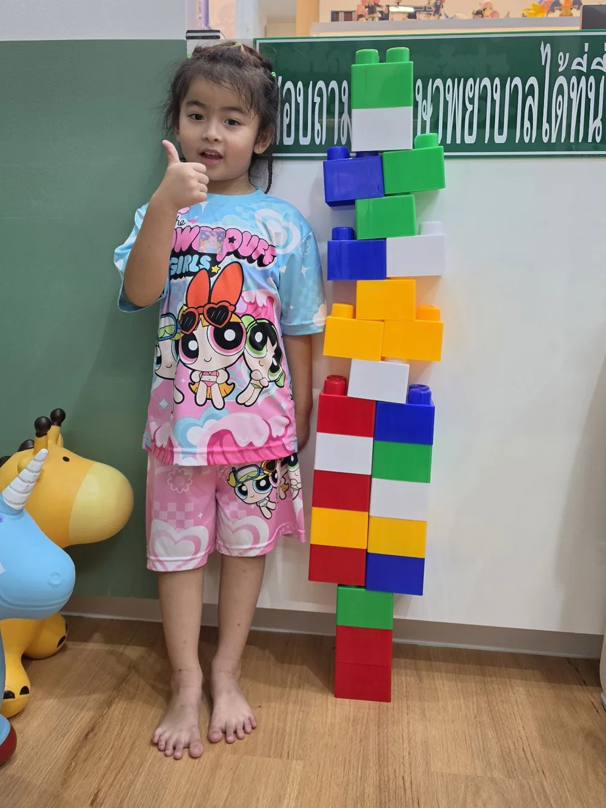
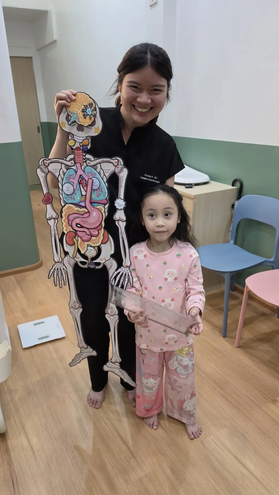
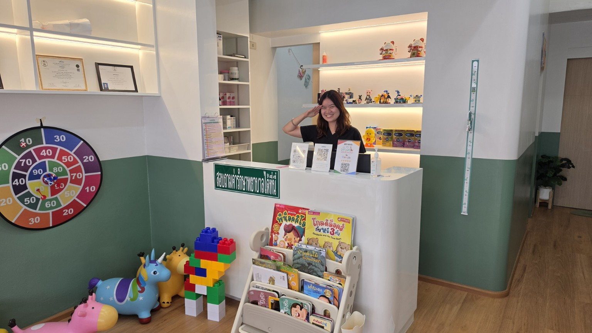

กุมารเวชทั่วไป
เมื่อลูกไม่สบาย
ตรวจรักษาไข้ ไอ น้ำมูก เจ็บคอ อาเจียน ท้องเสีย ผื่น และอาการเจ็บป่วยทั่วไปในเด็กและวัยรุ่น
ดูบริการตรวจเด็กทั่วไป ↗
เติบโตคลินิกเด็กและวัยรุ่น · ราชบุรี
เติบโตคลินิกเด็กและวัยรุ่น จ.ราชบุรีดูแลโรคเด็กทั่วไป วัคซีน สุขภาพตามวัยพร้อมประเมินการเจริญเติบโตและฮอร์โมนในเด็กและวัยรุ่น
กุมารเวชทั่วไป
การเจริญเติบโตและฮอร์โมน
กุมารเวชทั่วไป
ตรวจรักษาไข้ ไอ น้ำมูก เจ็บคอ อาเจียน ท้องเสีย ผื่น และอาการเจ็บป่วยทั่วไปในเด็กและวัยรุ่น
ดูบริการตรวจเด็กทั่วไป ↗
สุขภาพตามวัย
วัคซีน ตรวจสุขภาพ ติดตามน้ำหนัก ส่วนสูง และให้คำแนะนำตามช่วงวัย
ดูการดูแลสุขภาพและวัคซีน ↗ประเมินความสูง การเติบโต วัยรุ่นเร็วหรือช้า ไทรอยด์ น้ำหนัก และปัญหาฮอร์โมนในเด็กและวัยรุ่น
ดูเรื่องการเจริญเติบโตและฮอร์โมน ↗

รู้จักกุมารแพทย์ที่ดูแลเด็ก ๆ
“การดูแลเด็กไม่ได้มีแค่ตอนที่ป่วย แต่รวมถึงการติดตามว่าเด็กแต่ละคนกำลังเติบโตไปตามวัยหรือไม่”
ว.52953
กุมารเวชศาสตร์โรคต่อมไร้ท่อและเมแทบอลิซึม
แพทยศาสตร์บัณฑิต (เกียรตินิยมอันดับ 1)
คณะแพทยศาสตร์โรงพยาบาลรามาธิบดี มหาวิทยาลัยมหิดล
กุมารเวชศาสตร์โรคต่อมไร้ท่อและเมแทบอลิซึม
จุฬาลงกรณ์มหาวิทยาลัย
อาจารย์แพทย์ กลุ่มงานกุมารเวชกรรม
โรงพยาบาลราชบุรี
วันนี้ · ต่อเนื่อง · เติบโต
ให้ดูอาการของลูกควบคู่กับตัวเลขไข้ หากซึม หายใจลำบาก กินหรือดื่มได้น้อย ปัสสาวะน้อย มีชัก หรืออาการไม่ดีขึ้น ควรพามาพบแพทย์ เด็กอายุน้อยกว่า 3 เดือนที่มีไข้ตั้งแต่ 38°C ควรได้รับการประเมินโดยแพทย์
อ่านเรื่องโรคเด็กทั่วไปนอกจากวัคซีนตามช่วงอายุ ควรติดตามน้ำหนัก ส่วนสูง พัฒนาการ การกิน การนอน และพฤติกรรม เพื่อดูว่าสุขภาพและการเติบโตของลูกเป็นไปเหมาะสมตามวัยหรือไม่
ดูเรื่องสุขภาพและวัคซีนหลังอายุประมาณ 4 ปีจนก่อนเข้าสู่วัยรุ่น เด็กส่วนใหญ่มักสูงขึ้นประมาณ 5–6 ซม./ปี แต่อัตราการโตเปลี่ยนตามอายุและช่วงวัยรุ่น จึงควรดูแนวโน้มต่อเนื่องจากกราฟการเจริญเติบโต ไม่ใช่ดูจากตัวเลขครั้งเดียว
ดูเรื่องการเจริญเติบโตเติบโตคลินิกเด็กและวัยรุ่นอยู่ข้างตลาดกำนันหลัก อ.เมือง ราชบุรี สามารถกดดูเส้นทางใน Google Maps ได้จากเว็บไซต์ หากค้นหาคำว่า ‘คลินิกเด็กใกล้ฉัน’ สามารถตรวจสอบตำแหน่งและระยะทางจากหมุด Google Maps ของคลินิกได้โดยตรง
ดูตำแหน่งและเส้นทางใน Google Maps